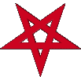

|
Dans ce rituel, la déesse Némésis, déïté du destin et de la vengeance, a le rôle d'opposé complémentaire de l'égo, se référant au soi intime en tant que centre des deux personnalités. Des habitudes et des actes allant à l'encontre de ses désirs réels créent des opposés de même force et forment, par là même, une anti-personnalité de l'ego, identifiée dans ce cas au principe de Némésis.
Sur le plan de la réalité, des troubles dûs aux actions commises contre ses désirs subconscients peuvent être éliminés par un rituel d'union avec ce frère(ou sœur)-démon personnel, ce qui permet à chacun d'atteindre son soi intime. L'effet de ce rituel, s'il est correctement accompli, est fatal, par définition. Par conséquent, l'opération est strictement limitée à la partie de la psyché que le mage souhaite explorer. Durant ce rituel, un sceau représentant cette partie de la psyché est activé avec force afin que le mage puisse chercher des réponses à ses problèmes à l'interieur de la partie de sa personnalité qu'il a choisi d'explorer. Dans ce but, aucun désir ou vœu spécifique ne peut être utilisé, c'est là une restriction nécessaire pour éviter d'être submergé par des effets indésirables. Le mage doit en être parfaitement conscient lorsqu'il construit le sceau.
LA CONJURATION DE NÉMÉSIS
1. Bannissement.
2. Le rituel se pratique en position assise sur le sol comme celle de la rune Peorth.
La tête peut reposer sur la partie inférieure des bras et le visage doit être couvert par le capuce de la robe.
3. Exposé de son intention :
« Avec l'aide de ce sceau, je veux atteindre le centre de mon être par l'union avec mon opposé »
4. L'incantation est prononcée tout en visualisant un personnage ailé du sexe opposé qui s'approche du mage.
Ce personnage porte le sceau choisi sur sa poitrine, il est à la fois beau et terrifiant.
5. Incantation :
Viens à moi, ô Némésis, puissante et terrifiante sœur bien aimée
Viens à moi, ô Némésis, Toi qui es la déesse de mon Dieu, Toi qui es le démon de mon Démon
Viens à moi, ô Némésis, Toi qui es le démon de mon Dieu, Toi qui es la déesse de mon Démon
Viens à moi, ô Némésis, Toi qui es la part de moi-même que je ne suis pas
Viens à moi, ô Némésis, Toi qui es le contrepoids de mon destin
Viens à moi, ô Némésis, Toi dont les ailes nous emportent vers notre centre commun Kia
Viens à moi, ô Némésis, Toi qui es ma peur ultime, Toi qui es mon désir ultime
Viens à moi, ô Némésis, Toi avec qui l'union est un soupir d'extase et le silence de la mort
Viens à moi, ô Némésis, car tu es mon chemin et je suis ton but,
je fais appel à toi pour te rencontrer dans ce sceau
Viens à moi, ô Némésis, et guide moi à travers ce sceau vers notre centre commun Kia
Commencer une hyperventilation pendant la lecture de l'incantation.
Le personnage visualisé avec le sceau se rapproche de plus en plus
jusqu'à se fondre dans votre propre corps. A ce moment là, criez :
ZodACAM VaPAAHe ANANAEL ZoDA Ah !
(J'agite les ailes de la sagesse secrète qui est en moi !)
6. Bannissement et/ou rire

|